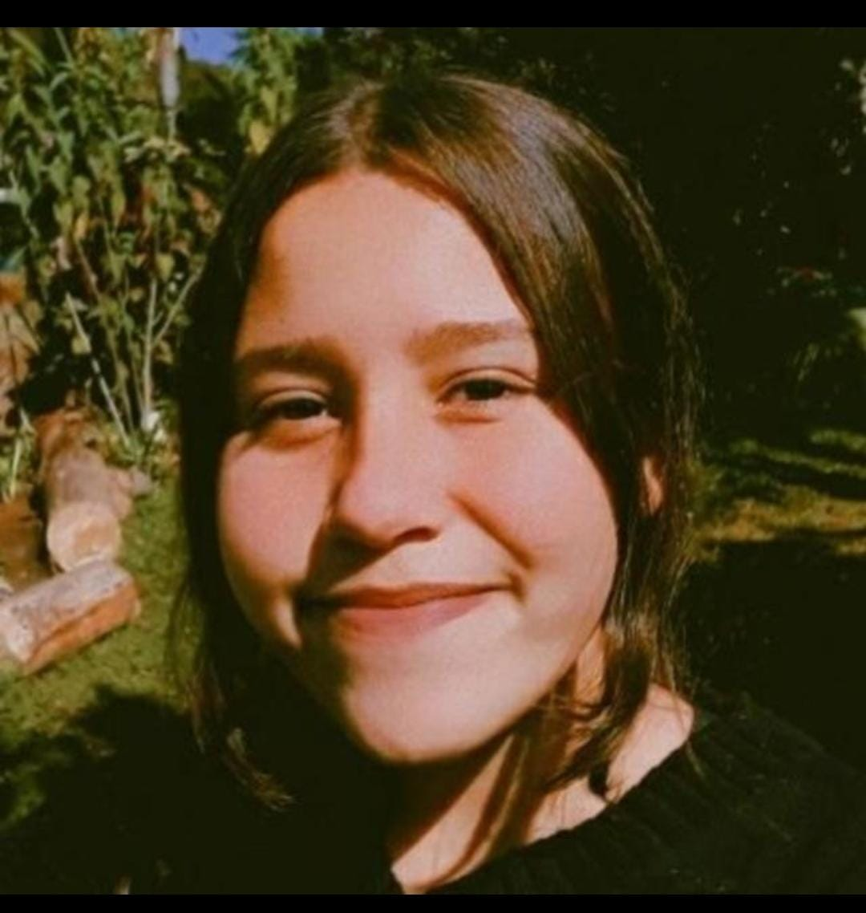

Emilly Kamilly Bonfim Ferreira
Data de Nascimento: 10/01/2008
Idade: 15 anos
Sexo: feminino
Número para contato: (43)9 8839-9693
E-mail: Emykamilly@gmail.com
Endereço: Rua Antônio Felipe da Silva, Jardim Belém, Nº36, Londrina-PR
Fundamental 2 completo- Escola Estadual Lauro Gomes da Veiga Pessoa(2022)
Cursando Ensino Médio Técnico- Escolas Sociais Marista Irmãos Ácacio
Em busca do meu primeiro trabalho
• Artística, prestativa em equipe, criativa, comunicativa, organizada, habilidade digital, habilidades manuais, artesanato;
• HTML/CSS;
• Minecraft voltada em Lógica de Programação
Leonardo- 9 8833-5191